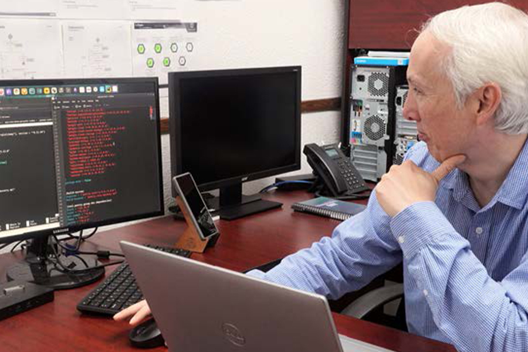
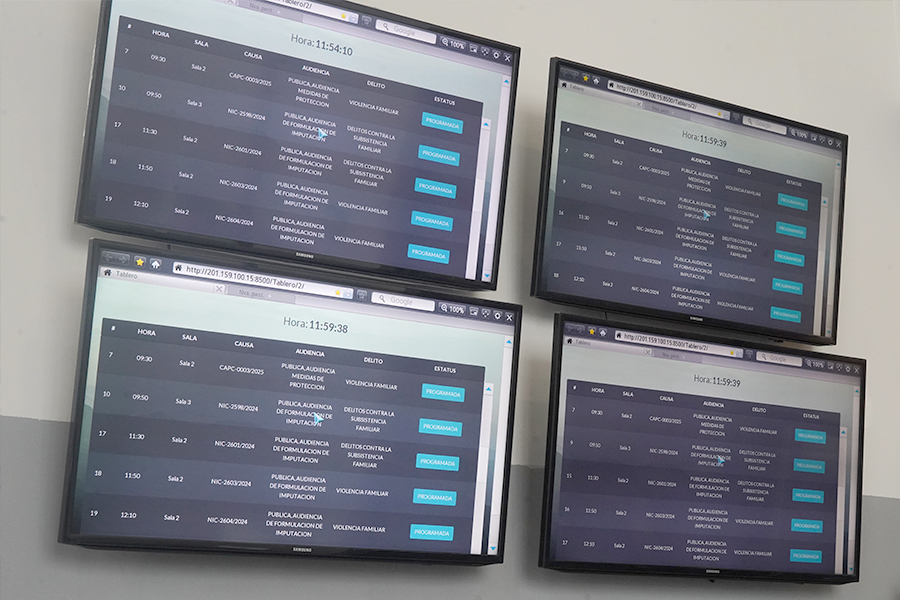

Renovamos la justicia digital para brindar nuevas formas de servicio a la ciudadanía, con trámites sencillos, ágiles y seguros
La incorporación de la innovación tecnológica en el sistema judicial ha sido un punto crucial en la impartición de justicia en Coahuila, lo que nos ha permitido optimizar procesos y acercar nuestro servicio a las y los ciudadanos.
Este 2024 experimentamos una significativa evolución en la consolidación exitosa de la justicia digital, lo que ha beneficiado a quienes buscan resolver conflictos de manera rápida y transparente, y hace de este Poder Judicial un sistema de impartición de justicia moderno, alineado con las necesidades de la sociedad actual y capaz de adaptarse a los desafíos tecnológicos del futuro.
Renovamos Poder en Línea y pusimos a disposición de todas las personas usuarias una aplicación para dispositivos celulares. Esta aplicación concentra todas las herramientas de justicia digital para las y los litigantes en la palma de su mano, como lo son el Sistema de Citas, el Buzón Electrónico, el Expediente Virtual 2.0 y las Boletas Electrónicas de Gestión Actuarial, brindando una justicia más pronta y expedita a la ciudadanía.
El Sistema de Administración de Justicia Inteligente (SAJI) es una realidad en la materia civil con especialización hipotecaria, y pronto se implementará en todas las materias. Durante el año que se informa, además se puso en funcionamiento el Sistema de Administración de Gestión Actuarial (SAGA) que permite la asignación y seguimiento eficiente de las notificaciones realizadas por las centrales de actuarios.
También, a través de nuestro sitio web la ciudadanía puede seguir sin intermediarios todos los casos que nos llegan, usando un buscador de ubicación de expedientes versátil, dando a conocer a las y los usuarios la publicación de las listas de acuerdos de los juzgados, y las versiones públicas de las sentencias ejecutoriadas, edictos, estadística, entre otros.
Las iniciativas que llevamos a cabo reflejan nuestro compromiso con la modernización tecnológica, la eficiencia procesal y la accesibilidad de los servicios judiciales para todas y todos los coahuilenses.
Implementación del Sistema de Administración de Justicia Inteligente (SAJI)
En 2024 nos encargamos de trabajar en el fortalecimiento y modernización de nuestros procesos judiciales para incluir el uso de las tecnologías de la información para eficientar las labores jurisdiccionales, así como proporcionar mayor celeridad y seguridad jurídica en los juzgados de primera instancia. Por esa razón, implementamos la nueva plataforma Sistema de Administración de Justicia (SAJI) en los Distritos Judiciales de Saltillo y Torreón, brindando herramientas especializadas para la gestión de asuntos civiles en materia hipotecaria, optimizando la administración de acuerdos, promociones y resoluciones, mejorando así el flujo y la eficiencia de los procesos.
El SAJI ha sido fundamental en la gestión eficiente de procesos administrativos, para garantizar una justicia pronta, expedita, innovadora, transparente y abierta. Durante el periodo que se informa continuamos con la implementación de la Firma Electrónica, la cual nos ha permitido agilizar y garantizar la autenticidad de documentos legales, proporcionando una capa adicional de seguridad en el intercambio de información judicial.
Tabla 46. Documentos con firmado electrónico según plataforma que los publica
| . | . | . | PAIIJ Familiar y Penal | PAIIJ Familiar y Penal | Total Documentos | Total Acuerdos |
|---|---|---|---|---|---|---|
| Distrito Judicial | Documentos trámites recibidos | Acuerdos realizados | Documentos trámites recibidos | Acuerdos realizados | Documentos trámites recibidos | Acuerdos realizados |
| Acuña | 8,280 | 7,506 | 11,056 | 14,182 | 19,336 | 21,688 |
| Monclova | 46,730 | 44,375 | 30,519 | 36,447 | 77,249 | 80,822 |
| Parras de la Fuente | 8,672 | 6,340 | 3,462 | 3,522 | 12,134 | 9,862 |
| Carbonífera | 11,373 | 11,519 | 8,583 | 8,813 | 19,956 | 20,332 |
| Río Grande | 13,955 | 13,680 | 13,002 | 17,638 | 26,957 | 31,318 |
| Saltillo | 156,732 | 166,330 | 88,402 | 102,456 | 245,134 | 268,786 |
| San Pedro | 10,565 | 10,835 | 7,539 | 9,692 | 18,104 | 20,527 |
| Torreón | 155,926 | 183,193 | 59,902 | 65,273 | 215,828 | 248,466 |
| Total | 412,233 | 443,778 | 222,465 | 258,023 | 634,698 | 701,801 |
Fuente: Dirección de Innovación de la Oficialía Mayor. Poder Judicial del Estado de Coahuila de Zaragoza. 2024.

Diseño del Sistema de Gestión de Documentos
En cumplimiento del convenio de colaboración para exhortos electrónicos con las entidades federativas, desarrollamos un sistema que permite gestionar documentos legales en línea, facilitando el acceso y reduciendo desplazamientos innecesarios para los usuarios.
Sitio web
La mejora de los servicios de justicia mediante el uso de nuevas tecnologías es un pilar fundamental dentro de nuestro Modelo de Justicia. En este contexto, nos encontramos comprometidos en ofrecer una experiencia más accesible, eficiente y transparente para todos los coahuilenses, ya que nos permite reducir las barreras físicas y temporales, acercando la justicia a cada rincón del estado y garantizando un sistema judicial más cercano, justo e innovador.
De esta forma, buscamos no solo agilizar los trámites y procedimientos judiciales, sino también fomentar la participación ciudadana y la transparencia en los procesos judiciales. En el periodo que abarca el presente informe, registramos un millón 243 mil 638 de visitas realizadas por 279 mil personas usuarias.
Plataforma web
Durante 2024 trabajamos en la actualización de la Plataforma Web 2.0, la cual, basada en tecnologías de vanguardia y arquitecturas escalables, nos ha permitido optimizar los procesos internos y reducir los costos operativos. La digitalización contribuye además a la conservación del medio ambiente, alineándose con prácticas sostenibles.
Durante el periodo que se informa, publicamos 15 mil 995 listas de acuerdos, 22 mil 086 sentencias en sus versiones públicas y siete mil 277 edictos. Además, en esta plataforma los justiciables también pueden encontrar glosas, listas de peritos registrados ante el Tribunal Superior de Justicia, tesis y jurisprudencias, búsqueda y localización de expedientes.
Tabla 48. Listas de acuerdos, edictos, sentencias y audiencias publicadas por Distrito Judicial
| Área | Listas de acuerdos | Edictos | Sentencias | Audiencias |
|---|---|---|---|---|
| Distrito Judicial de Acuña | 448 | 481 | 129 | 1,146 |
| Distrito Judicial de Monclova | 1597 | 667 | 2,675 | 7,310 |
| Distrito Judicial de Parras | 224 | 221 | 352 | 645 |
| Distrito Judicial Región Carbonífera | 448 | 152 | 846 | 1,527 |
| Distrito Judicial de Río Grande | 890 | 319 | 971 | 1,352 |
| Distrito Judicial de Saltillo | 3743 | 2,602 | 6,380 | 11,394 |
| Distrito Judicial de San Pedro | 448 | 340 | 875 | 1,804 |
| Distrito Judicial de Torreón | 3,575 | 2,784 | 6,875 | 11,383 |
| Órganos especializados | 1,099 | 0 | 830 | 10,687 |
| Pleno del Tribunal Constitucional | 15 | 0 | 0 | 0 |
| Pleno del Tribunal Superior de Justicia | 220 | 0 | 4 | 0 |
| Salas Colegiadas | 845 | 0 | 665 | 57 |
| Tribunales Distritales | 1,118 | 0 | 992 | 356 |
| Tribunales Laborales | 1,325 | 1 | 492 | 1,264 |
| Total | 15,995 | 7,277 | 22,086 | 48,925 |
Fuente: Dirección de Innovación de la Oficialía Mayor. Poder Judicial del Estado de Coahuila de Zaragoza. 2024.
Creación del Sistema de Nómina
En coordinación con la Secretaría de Finanzas del Gobierno del Estado y las Direcciones de Innovación, Recursos Humanos y Recursos Financieros de la Oficialía Mayor del Poder Judicial, desarrollamos un sistema de nómina robusto que permite la generación y descarga de recibos de pago de manera segura a través de una plataforma web. Este avance no solo optimiza la gestión de recursos humanos, sino que también refuerza la transparencia y la seguridad en el manejo de información sensible de nuestro personal.
Encuentro Nacional de Unidades de Gestión Tecnológica de los Poderes Judiciales Locales
En el marco de la Segunda Asamblea Plenaria 2024 de la Comisión Nacional de Tribunales Superiores de Justicia (CONATRIB), fuimos anfitriones de un encuentro trascendental entre los responsables tecnológicos de los tribunales locales del país. Este evento permitió avanzar en la interconexión para el envío y recepción de exhortos electrónicos, además de promover la implementación del Nuevo Código Nacional de Procedimientos Civiles y Familiares.

Sistema Integral de Calidad y Gestión Documental (SICGD)
Hemos desarrollado un sistema integral para apoyar en la creación, gestión y control de documentos dentro del Sistema Integral de Calidad y Gestión Documental (SICGD). Esta plataforma facilita la revisión, aprobación y disposición de los procedimientos y formatos necesarios para garantizar la calidad y eficiencia de los procesos judiciales y administrativos.
En 2024, se procesaron 54 versiones de procedimientos detallados, los cuales describen minuciosamente las etapas de los servicios que cada una de las áreas participantes en el SICGD debe seguir. Estos procedimientos han sido clave para estandarizar y optimizar las operaciones en el ámbito judicial.
Simultáneamente, para asegurar la correcta implementación de estos procedimientos, hemos procesado 249 versiones de formatos, los cuales ya están siendo utilizados por las dependencias del sistema. Estos formatos sirven como evidencia objetiva del cumplimiento de los procedimientos, tal como lo requieren las normativas internacionales en materia de calidad y gestión.
Poder en Línea
Con el propósito de fortalecer los servicios que brindamos y hacerlo de manera más ágil y sencilla, este año pusimos en marcha una nueva aplicación para dispositivos celulares de Poder en Línea.
Esta aplicación cuenta con una interfaz amigable para personas profesionales del derecho y ciudadanía, permitiendo presentar demandas, escritos, promociones y anexos de forma electrónica, consultar el expediente virtual, agendar citas en los órganos jurisdiccionales y gestionar servicios actuariales. Además, le permite a las personas usuarias estar al tanto del estatus de su trámite, al contar con un apartado de notificaciones sobre sus asuntos.
Asimismo, al incorporarse la biometría y el token único para la autenticación de los trámites realizados a través de la aplicación, no solo agilizamos los procesos judiciales, sino que también consolidamos una justicia más segura y eficiente.
Con estos resultados, en el Poder Judicial constatamos el compromiso de posicionarnos como un referente en la modernización judicial, logrando una justicia más accesible e inclusiva.
Tabla 49. Citas agendadas en Poder en Línea, por trámite
| Trámite | Cantidad |
|---|---|
| Revisión de expedientes | 984 |
| Tramitación de oficios/ edictos/exhortos | 2,304 |
| Citas con actuarios | 1,471 |
| Expedición de copias certificadas | 66 |
| Devolución de documentos | 497 |
| Entrega de cheques y certificados de depósitos | 217 |
| Cita con juezas y jueces | 194 |
| Ratificaciones | 490 |
| Entrega de demandas iniciales y anexos | 122 |
| Otras necesidades judiciales no clasificadas | 25 |
| Total | 6,370 |
Fuente: Dirección de Innovación de la Oficialía Mayor. Poder Judicial del Estado de Coahuila de Zaragoza. 2024.
Expediente Virtual
Nuestro enfoque central es garantizar a toda persona usuaria la tramitación de sus controversias, mediante un efectivo e inmediato acceso a la impartición de justicia para que las y los litigantes no tengan necesidad de trasladarse a las sedes judiciales.
Además, proporcionamos la actualización en tiempo real e inmediata, evitamos el extravío de expedientes, disminuimos el acervo documental físico y brindamos seguridad y confidencialidad a las y los justiciables.
En este año, 31 mil 540 expedientes fueron autorizados para su consulta remota.
Tabla 50. Expedientes autorizados mediante la plataforma Expediente Virtual 2.0, por Distrito Judicial
| Distrito | Cantidad |
|---|---|
| Acuña | 1,066 |
| Monclova | 2,807 |
| Parras | 963 |
| Región Carbonífera | 1,393 |
| Río Grande | 3,058 |
| Saltillo | 14,835 |
| San Pedro | 519 |
| Torreón | 6,899 |
| Total | 31,540 |
Fuente: Dirección de Innovación de la Oficialía Mayor. Poder Judicial del Estado de Coahuila de Zaragoza. 2024.
Buzón Electrónico
El Buzón Electrónico es una herramienta clave en la modernización de la administración de justicia, permitiendo la presentación digital de demandas iniciales, escritos y promociones ante los órganos jurisdiccionales de primera instancia del Poder Judicial. Gracias a esta plataforma, los abogados litigantes y la ciudadanía pueden realizar estos trámites de manera virtual desde cualquier lugar del estado y a cualquier hora, eliminando la necesidad de desplazarse físicamente a las sedes judiciales.
Este año seguimos avanzando en su mantenimiento y perfeccionamiento técnico, consolidándolo como una herramienta indispensable para optimizar los tiempos y procesos judiciales.
Tabla 51. Demandas iniciales o promociones recibidas en el buzón electrónico, por Distrito Judicial
| Distrito | Cantidad |
|---|---|
| Acuña | 13,117 |
| Monclova | 62,360 |
| Parras | 3,678 |
| Región Carbonífera | 19,701 |
| Río Grande | 22,730 |
| Saltillo | 181,214 |
| San Pedro | 13,977 |
| Torreón | 171,654 |
| Total | 488,431 |
Fuente: Dirección de Innovación de la Oficialía Mayor. Poder Judicial del Estado de Coahuila de Zaragoza. 2024.
Boletas Electrónicas de Gestión Actuarial (BEGA)
El Sistema de Boletas Electrónicas de Gestión Actuarial (BEGA) es una innovadora herramienta tecnológica diseñada para optimizar el trabajo de las y los notificadores. Gracias a este sistema, las personas usuarias pueden llenar electrónicamente las boletas de notificación, lo que facilita la programación de diligencias, notificaciones y emplazamientos de manera más ágil y eficiente.
Este avance ha sido crucial para mejorar la gestión de los procesos judiciales, reduciendo los tiempos de ejecución y asegurando una mayor precisión en las notificaciones. Este año, el sistema ha recibido 12 mil 505 registros.
A medida que continuamos con su uso y mejora, seguimos avanzando hacia un sistema judicial más transparente y accesible para todos.
Tabla 52. Notificaciones mediante boletas electrónicas
| Central | Cantidad |
|---|---|
| Saltillo | 9,988 |
| Torreón | 2,517 |
| Total | 12,505 |
Fuente: Dirección de Innovación de la Oficialía Mayor. Poder Judicial del Estado de Coahuila de Zaragoza. 2024.
Sistema de Administración de Gestión Actuarial (SAGA)
Desarrollamos y capacitamos al personal en el uso del Sistema de Administración de Gestión Actuarial (SAGA), diseñado específicamente para la central de actuarios. Esta herramienta incluye una aplicación móvil que facilita las tareas en campo, mejorando la eficiencia operativa en los Distritos Judiciales de Saltillo y Torreón.
Sistema de Capacitaciones y Profesionalización del Poder Judicial (SICAP)
Como parte de nuestro compromiso con la innovación, este año seguimos impulsando el Sistema de Capacitaciones y Profesionalización del Poder Judicial del Estado de Coahuila de Zaragoza (SICAP), una plataforma digital diseñada para ofrecer programas de capacitación y facilitar la aplicación de exámenes en línea a través del Instituto de Especialización Judicial.
A través del SICAP, se han impartido 44 cursos, beneficiando a un total de seis mil 673 participantes. Además, se han aplicado de manera virtual cuatro mil 457 exámenes, lo que ha permitido evaluar y certificar a los profesionales del Poder Judicial de manera ágil y eficiente. En total, hemos emitido tres mil 506 constancias de capacitación y certificados, consolidando al SICAP como una herramienta esencial en la formación continua de nuestro personal.
No solo hemos mejorado la accesibilidad y flexibilidad en los procesos de capacitación, a la par hemos fortalecido la profesionalización y el compromiso con la excelencia en el servicio judicial.
Tabla 53. Áreas que han ofertado cursos en el Sistema de Capacitaciones y Profesionalización del Poder Judicial
| Áreas del Poder Judicial | Total de cursos |
|---|---|
| Centro de Medios Alternos de Solución de Controversias | 24 |
| Instituto de Especialización Judicial | 17 |
| Unidad de Derechos Humanos e Igualdad de Género | 1 |
| Dirección de Innovación e Informática | 2 |
| Total | 44 |
Fuente: Dirección de Innovación de la Oficialía Mayor. Poder Judicial del Estado de Coahuila de Zaragoza. 2024.
Tabla 54. Cursos que se han impartido mediante el Sistema de Capacitaciones y Profesionalización del Poder Judicial
| Cursos impartidos | Total |
|---|---|
| Aplicación de examen de conocimientos prácticos, recepción de documentación y evaluación de examen oral | 4 |
| Aplicación de examen de conocimiento teóricos | 31 |
| Aplicación de examen de conocimientos teóricos y evaluación de proyecto final | 1 |
| Aplicación de examen de conocimientos teóricos y recepción de documentación | 2 |
| Curso de capacitación | 1 |
| Curso de capacitación asíncrono | 2 |
| Otorgamiento de constancias de participación | 1 |
| Procedimiento de certificación en mediación | 2 |
Fuente: Dirección de Innovación de la Oficialía Mayor. Poder Judicial del Estado de Coahuila de Zaragoza. 2024.

Servicios de soporte técnico
En cuanto al apoyo técnico al personal del Poder Judicial, se dio servicio de mantenimiento preventivo y correctivo al equipo de cómputo de diferentes áreas que conforman el Poder Judicial, como Salas, Juzgados y Áreas Administrativas que se ubican en los diversos distritos judiciales.
En los servicios se brinda ayuda a los usuarios en sitio, vía telefónica o mediante el acceso remoto a sus equipos. Este año brindamos 16 mil 797 servicios de soporte interno para aminorar las obsolescencias propias del avance tecnológico, realizar ajustes preventivos y correctivos.

Tabla 55. Solicitudes de soporte técnico atendidas, por Distrito Judicial
| Distrito Judicial | Soporte Técnico |
|---|---|
| Acuña | 288 |
| Monclova | 3,412 |
| Parras de la Fuente | 30 |
| Región Carbonífera | 3,043 |
| Río Grande | 1,052 |
| Saltillo | 5,112 |
| San Pedro | 463 |
| Torreón | 33,00 |
| Tribunales Laborales | 97 |
| Total | 16,797 |
Fuente: Dirección de Innovación de la Oficialía Mayor. Poder Judicial del Estado de Coahuila de Zaragoza. 2024.
Equipo de transmisión para las salas orales
Fortalecimos el Sistema Integrado de Grabación Audiovisual (SIGA) en las salas de audiencia orales de los diferentes distritos judiciales del estado en la materia civil, familiar, laboral y penal, con el propósito de seguir brindando transparencia al sistema judicial y hacer que sea rápido y eficiente de revisar. Además, realizamos el mantenimiento preventivo en las salas ya instaladas.
Tabla 56. Distribución de nuevas salas de audiencia, por Distrito Judicial y materia
| Distrito | Materia | Total | ||||
|---|---|---|---|---|---|---|
| Civil | Familiar | Laboral | Mercantil | Penal | ||
| Acuña | 0 | 1 | 0 | 0 | 0 | 1 |
| Monclova | 1 | 2 | 0 | 0 | 1 | 4 |
| Carbonífera | 0 | 0 | 0 | 0 | 0 | 0 |
| Parras | 0 | 1 | 0 | 0 | 0 | 1 |
| Río Grande | 0 | 2 | 0 | 1 | 0 | 3 |
| Saltillo | 4 | 1 | 0 | 2 | 10 | 17 |
| San Pedro | 0 | 1 | 0 | 0 | 1 | 2 |
| Torreón | 0 | 1 | 1 | 3 | 2 | 7 |
| Total | 5 | 9 | 1 | 6 | 14 | 35 |
Fuente: Dirección de Innovación de la Oficialía Mayor. Poder Judicial del Estado de Coahuila de Zaragoza. 2024.
Equipo de transmisión para las salas colegiadas
Durante este año continuamos con las labores de mantenimiento preventivo y correctivo en el equipo de transmisión que se encuentra instalado en las salas de sesiones del Pleno del Tribunal Superior de Justicia, así como las Salas Colegiadas en Materia Civil y Familiar, Penal y la Sala Regional, con el objetivo de cumplir a cabalidad con el principio de máxima publicidad en nuestra toma de decisiones y resoluciones, y así poder transmitir por redes sociales cada una de las sesiones de estas salas y estén al alcance de la ciudadanía.
Adquisición de equipos de cómputo
En cumplimiento con nuestro objetivo de fortalecer la infraestructura tecnológica de información y comunicación, renovamos equipamiento tecnológico en áreas administrativas y jurisdiccionales del Poder Judicial del Estado, para la adecuada ejecución de tareas y procesos realizados en el servicio de administración e impartición de justicia.
Tabla 57. Distribución de equipos de cómputo adquiridos, por Distrito Judicial
| Distrito Judicial | Equipos asignados |
|---|---|
| Acuña | 2 |
| Monclova | 11 |
| Parras de la Fuente | 5 |
| Región Carbonífera | 15 |
| Río Grande | 3 |
| Saltillo | 30 |
| San Pedro | 5 |
| Torreón | 24 |
| Total | 95 |